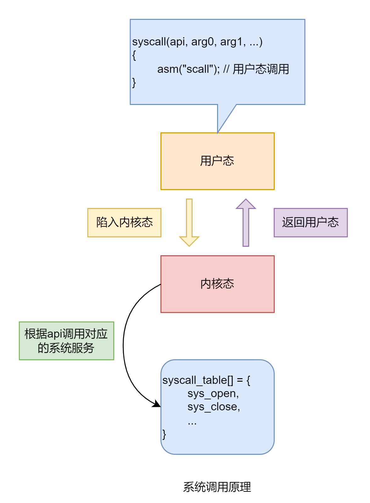

系统调用
一. 描述
在现代操作系统中，分为了内核态和用户态。内核态是内核程序本身，可以对设备资源进行管理核控制。而用户态只能够去调用内核提供的服务，不能够直接对资源进行访问。 这么做的目的是为了避免用户恶意程序对系统的损坏，对设备进行恶意操作。于是用户态核与内核态之间的接口就出现了，它就是系统调用。
系统调用是指用户态程序通过特殊的指令陷入到内核态，执行内核态提供的服务程序，然后再返回到用户态。
支持特权保护的处理器架构中，都提供了模式切换的指令。至少需要有两个特权级，一个用于内核态，特权更高，可以直接访问硬件。另外一个用于用户态，
只能通过系统调用执行内核提供好的服务。在 x86 架构中，有4个特权级（ring0, ring1, ring2, ring3），在 riscv 架构中，有3个特权级（Machine, Supervisor, User）。
二. 原理
系统调用的实现，是基于特权级切换指令实现的，一般都是中断或者异常。用户态通过调用这些指令，就会产生一个中断或者异常，处理器会去中断表中查找系统调用指令对应的处理函数，然后就根据系统调用的 API 进行内核服务的分发，去调用对应的内核函数。
值得注意的是，在执行系统调用期间，需要打开中断，避免在系统调用时出现死循环，导致内核卡死。
三、框架图

四. 接口
系统调用表是在内核固定下来的，不同的架构只要根据固定的 API 值，就能获取到对应的内核服务功能，然后以函数指针的方式去调用执行即可。
NX_SyscallHandler NX_SyscallGetHandler(NX_SyscallApi api);